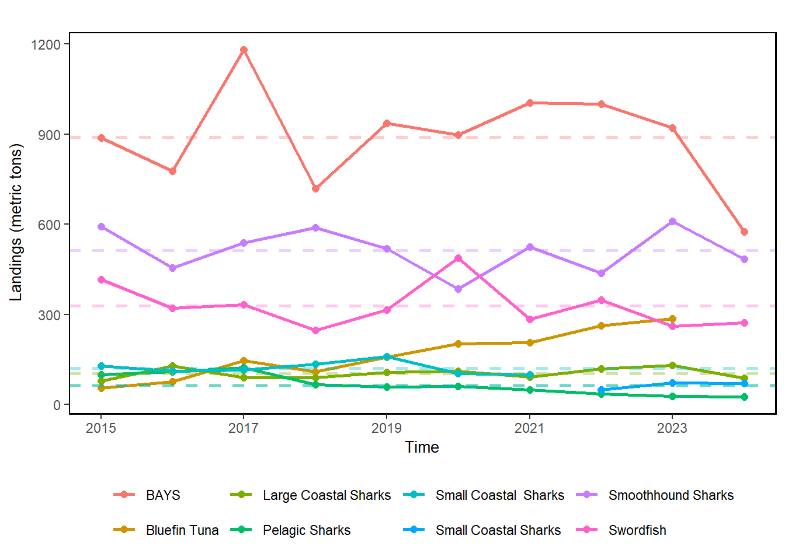
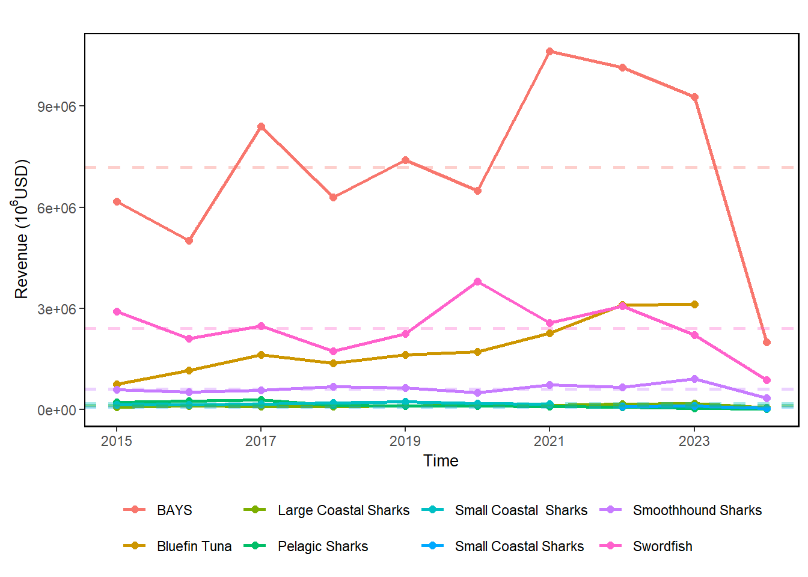
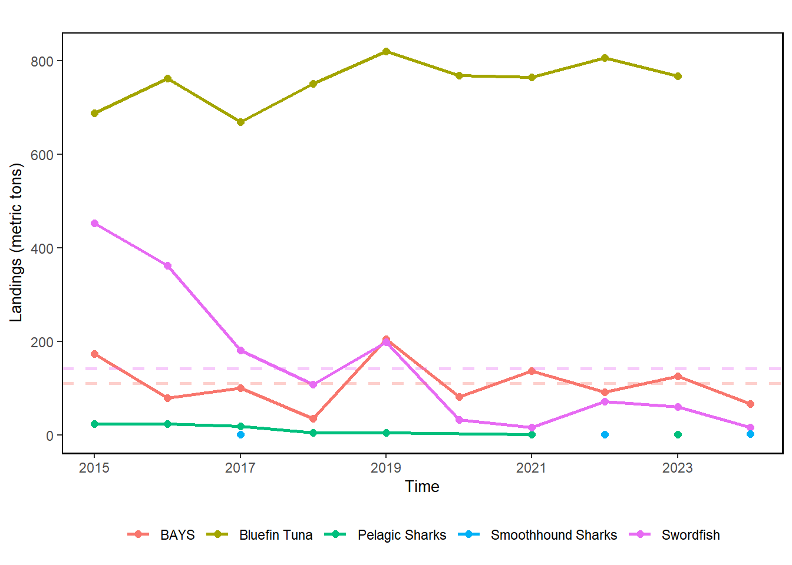

29 HMS Commercial Landings and Revenue Data
Description: Aggregated Atlantic Highly Migratory Species (HMS) landings and revenue data prepared for the Fisheries of the United States (FUS) report, spanning 2015-2024.
Indicator family:
Contributor(s): Heather Baertlein, George Silva, Jackie Wilson, Jennifer Cudney
Affiliations: NEFSC
29.1 Introduction to Indicator
There are 53 species managed under the Highly Migratory Species (HMS) Fishery Management Plan. Aggregated Atlantic HMS landings data of swordfish, sharks, bluefin tuna, and BAYS (bigeye, albacore, yellowfin, skipjack) tunas were prepared for the Fisheries of the United States (FUS) report, were used for the Status of the Ecosystem report, spanning 2015-2024. FUS is considered to be the annual NOAA Fisheries yearbook of fisheries statistics. It provides a snapshot of data, primarily at the national level, on U.S. recreational catch and commercial fisheries landings and value. The FUS process has since been the vehicle used by HMS staff to QA/QC shark, swordfish, the “BAYS” tunas (bigeye, albacore, yellowfin and skipjack), and bluefin tuna data for all future HMS Division products. Economic data produced for this report forms the basis for all economic data used in other reports or products. This indicator therefore provides the best comprehensive summary of commercial landings and revenue information for HMS fisheries that target or retain tunas, swordfish, and sharks. These data can be evaluated independently, and can also be included in overall estimates of commercial fisheries landings in the northeast region.
29.2 Key Results and Visualizations
An additional year of data (2024) has been added to the HMS commercial landings time series.
In the Mid-Atlantic region (Connecticut to North Carolina), the species or management categories with the greatest amount of landings (in metric tons whole weight) include the BAYS tunas, smoothhound, and swordfish. There has been a steady increase in the landings of bluefin tuna since 2015. The species producing the greatest commercial revenue (in thousands of dollars) in the northeast include the BAYS tunas, swordfish and bluefin tuna.
In the New England region (Massachusetts to Maine, and Canada), the species or management categories with the greatest amount of landings (in metric tons whole weight) include bluefin tuna, BAYS tunas, and swordfish. The species producing the greatest commercial revenue (in thousands of dollars) in the northeast include the bluefin tuna, BAYS tunas, and swordfish.




29.3 Indicator statistics
Spatial scale: States where landings occurred were grouped regionally. “New England” includes Maine, New Hampshire, and Massachusetts, as well as landings from Canada. The “Mid-Atlantic Bight” includes states from Rhode Island to North Carolina. Landings in states outside of these ecological production units were excluded from analysis.
Temporal scale: Annually; data spans from 2015-2024
Synthesis Theme:
29.4 Implications
HMS landings data are summarized and presented in the Fisheries of the United States Report and the annual HMS Stock Assessment and Fishery Evaluation (SAFE) report.
In 2021 the International Commission for the Conservation of Atlantic Tunas (ICCAT) finalized recommendations for a two-year retention ban for shortfin mako (ICCAT Rec. 21-09), which will also affect total overall landings of pelagic sharks in coming years. In response, NOAA Fisheries finalized a rule establishing a shortfin mako shark retention limit of 0 until further notice (87 FR 39373; July 1, 2022. See 50 CFR 635.22(c)(8)). There have been no commercial landings of shortfin mako recently due to these restrictions.
29.5 Get the data
Point of contact: Jennifer Cudney (jennifer.cudney@noaa.gov)
ecodata name: ecodata::hms_landings
Variable definitions
- Year: data are summarized/aggregated by year. 2. EPU: region, “Mid-Atlantic Bight” or “New England”.
- HMS_Group: Management group for HMS, as defined below in “Data Processing”. 4. Var_wt: description of data (HMS Revenue or HMS Landings).
- Units_WT: description of unit of measure for data (metric tons whole weight of landings, or U.S. dollars).
- Value: Represents either metric tons of landings (round weight) or dollar value of landings by year and region.
Indicator Category:
29.7 Accessibility and Constraints
NOAA Fisheries releases collected information only if it can be done so in “aggregate or summary form which does not directly or indirectly disclose the identity or business of any person who submits such information” (Magnuson-Stevens Act § 402(b)(3); 16 U.S.C. 1881a(b)(3)). HMS and other fisheries landings data that have been properly screened to meet data standards and confidentiality are publicly available via the Fisheries of the United States (FUS) landings portal. Canadian landings information, which are included in this analysis if they reflect landings by U.S. vessels permitted to fish for HMS, are not included in the FUS portal. For this analysis, data were aggregated by year, area, and species and were included in the final summary unless there were less than 3 dealers involved in the landings.
tech-doc link https://noaa-edab.github.io/tech-doc/hms_landings.html